Fire Emblem: Shadow Dragon and the Blade of Light (1990)
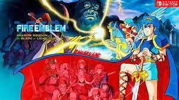El título fundacional de la saga. Estableció el género de RPG Táctico para consolas, presentando el famoso "Triángulo de Armas" (Espadas vencen Hachas, Hachas vencen Lanzas, Lanzas vencen Espadas) y el concepto de que cada unidad es un personaje único. Sigue la historia del príncipe Marth de Altea y su lucha para recuperar su reino y derrotar al sacerdote oscuro Gharnef y al dragón Medeus.
Fire Emblem Gaiden (1992)

Una secuela directa y atípica para la saga, con un mapa del mundo más libre y la introducción de mazmorras explorables en primera persona. Sigue a los héroes Alm y Celica en su conflicto en el continente de Valentia. Este juego experimentó con un sistema de magia basado en PV (puntos de vida) y la promoción de clases sin necesidad de objetos.
Fire Emblem: Mystery of the Emblem (1994)
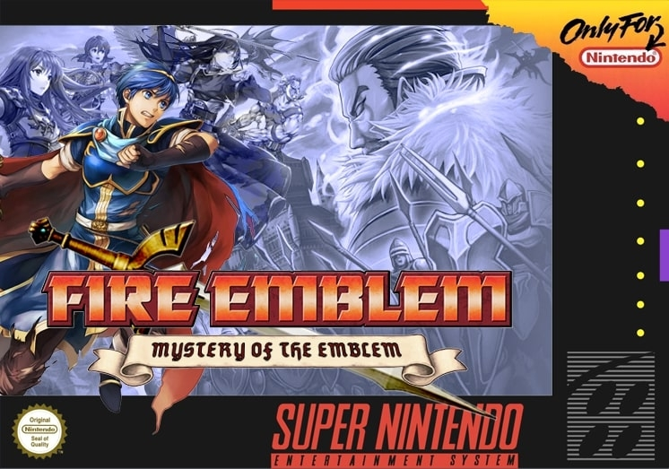Una continuación directa de la historia de Marth. Este juego se dividió en dos "libros": el primer libro era un remake de Shadow Dragon, y el segundo una secuela completamente nueva. Refinó los sistemas de juego, introdujo la función de "dismount" (desmontar) para unidades a caballo en interiores y fue conocido por su compleja narrativa política.
Fire Emblem: Genealogy of the Holy War (1996)
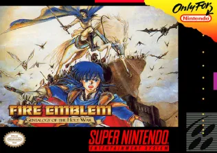Considerado uno de los juegos más ambiciosos y narrativamente oscuros de la saga. La historia se desarrolla en dos generaciones, con la primera generación casándose y la segunda generación jugando con sus hijos. Introdujo el vasto continente de Jugdral, el sistema de herencia de habilidades y mapas de una escala mucho mayor que la media de la franquicia.
Fire Emblem: Thracia 776 (1999)

Ambientado entre los eventos de la primera y segunda generación de Genealogy of the Holy War. Es conocido por ser el título más difícil de la serie, introduciendo mecánicas complejas como la fatiga, la captura de enemigos para obtener ítems y un enfoque intenso en la gestión de recursos y la supervivencia táctica.
Fire Emblem: The Binding Blade (2002)
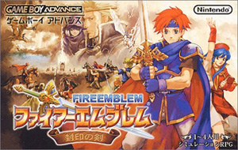El primer juego de la saga en la portátil Game Boy Advance. Se desarrolla en el continente de Elibe y sigue a Roy, el hijo de Eliwood, en su lucha contra el reino de Bern. Es notable por popularizar la serie en Japón en las portátiles y por ser el juego base para la primera aparición occidental de un personaje de Fire Emblem (Roy en Super Smash Bros. Melee).
Fire Emblem: The Blazing Blade (2003)
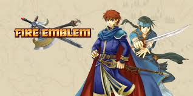El primer juego de Fire Emblem en ser lanzado oficialmente fuera de Japón. Funciona como precuela de The Binding Blade. Introdujo un Lord Protagonista múltiple (Eliwood, Lyn y Hector) y el sistema de "Tactician" (El estratega/jugador) para facilitar la comprensión de las mecánicas a los nuevos jugadores occidentales.
Fire Emblem: The Sacred Stones (2004)
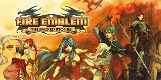Retomó algunos elementos de RPG del anterior Gaiden, reintroduciendo el mapa del mundo explorables y la posibilidad de enfrentarse a batallas aleatorias (Grinding) para subir de nivel a las unidades. Sigue a los mellizos reales Eirika y Ephraim en un continente nuevo, Magvel, en una historia enfocada en monstruos y reliquias sagradas.
Fire Emblem: Path of Radiance (2005)
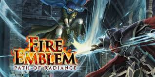El primer juego de consola en 3D. Introdujo el continente de Tellius y al protagonista Ike, el primer Lord que no es de la realeza. Es conocido por su producción cinematográfica y por abordar temas sociales complejos como el racismo entre las especies Beorc (humanos) y Laguz (hombres bestia transformables).
Fire Emblem: Radiant Dawn (2007)
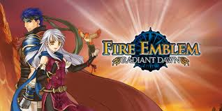Secuela directa de Path of Radiance. Es notable por su narrativa que se divide en cuatro partes, cambiando el foco entre varios protagonistas (incluyendo Ike y la Reina Micaiah). Es el único juego de la serie que permite la promoción a una tercera clase (Tiers 1, 2 y 3) para muchas unidades.
Fire Emblem Awakening (2012)
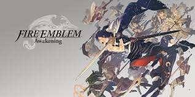Un título crucial que salvó a la franquicia de la cancelación. Reintrodujo el sistema de matrimonio/descendencia de Genealogy y el sistema de apoyo que genera lazos en el campo de batalla. Fue el primero en ofrecer la opción de desactivar la muerte permanente (Modo Casual) y atrajo una gran base de fans internacional a la Nintendo 3DS.
Fire Emblem Fates (2015)
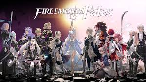Lanzado en tres versiones (Birthright, Conquest y Revelations). La historia se centra en el protagonista Corrin y la decisión de apoyar a su familia biológica (Hoshido) o adoptiva (Nohr). Experimentó fuertemente con la jugabilidad y la complejidad del diseño de mapas en cada una de las versiones.
Fire Emblem Echoes: Shadows of Valentia (2017)
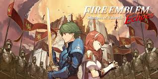Un remake completo de Fire Emblem Gaiden (1992). Mantuvo el concepto de los mapas del mundo y las mazmorras explorables, modernizando el sistema de combate con doblaje completo de los personajes y gráficos en 3D, devolviendo el foco a la historia de Alm y Celica.
Fire Emblem: Three Houses (2019)
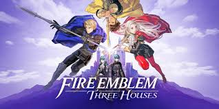Ambientado en la Academia de Oficiales en el continente de Fódlan. El juego se divide en dos fases: la vida de un profesor, donde el jugador entrena a sus unidades, y las batallas tácticas. Permite al jugador elegir entre tres casas/caminos narrativos (Águilas Negras, Leones Azules y Ciervos Dorados), ofreciendo una profunda rejugabilidad y un enfoque en las relaciones sociales.
Fire Emblem Engage (2023)
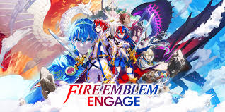Un título que celebra el 30º aniversario de la saga. La mecánica central es el uso de Anillos Emblema (Emblem Rings), que permiten al protagonista Alear convocar y fusionarse con héroes icónicos de juegos anteriores (Marth, Ike, Roy, etc.), utilizando sus habilidades clásicas en el campo de batalla.